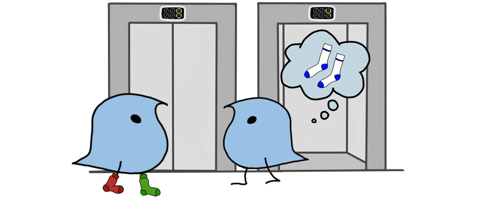
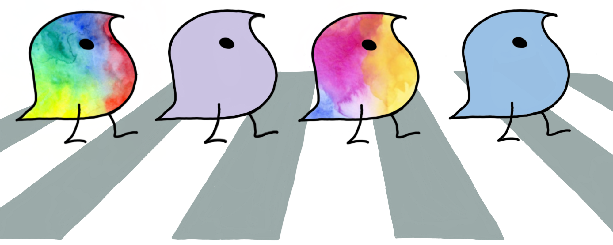

Research Overview
Sociolinguistics

In sociolinguistics, I am interested in the sound level of
language. I investigate how pronunciation is influenced by
social factors such as age, gender, sex, and class. As student
assistant, I am working in the DFG-funded project
Tacking Language Variation and Change across the Lifespan
(LaVaLi) hosted in the Sociolinguistics Lab at the University of Duisburg-Essen led by Isabelle Buchstaller. The project explores
how people's speech changes over the course of their lifespan.
The data used within the project comes from the Tyneside area in
the Northeast of England. For more information about this
project visit the
project's website
or
the project's blog.
I am also affiliated with the Sociolinguistics Lab at Michigan State University.
My bachelor’s thesis explored the realization of three vowels of one individual over time. I investigated how the FOOT & STRUT, FACE and GOAT vowels change over time depending on social factors influencing the individual’s pronunciation.
In Tyneside English the first-person possessive
Psycholinguistics
My interests in psycholinguistics lie in multilingualism. I am especially interested in the way different learned languages interact in multilingual speakers' minds. Especially languages that are related to each other can make language learning easier but can also hinder the fluent production of one language by interfering with each other. My goal is to combine methods and approaches from sociolinguistics and psycholinguistics to investigate whether studies conducted in laboratories are representative of everyday languages.
At the moment I am preparing a study that is investigating the production of English by L1 French speakers that live in Germany and participate in day-to-day life speaking German. The question is whether the dominant L2/L3 German is influencing the production of their L2/L3 English and whether experimental studies show the same results as analysis from sociolinguistic interviews.
Musicology

In my bachelor’s thesis I investigated the Leitmotifs of Aragorn and Arwen in Howard Shores film music The Lord of the Rings to analyze their musical relationship.
In musicology I am interested in two different areas: In historical musicology, I am looking into the relationship between Lorenzo il Magnifico and his musicians. So far, not a lot of research has been done in this area. Most studies focus on Lorenzo's relationship with other artists (e.g., painters or sculptors).
I also like to combine linguistics with music. I like to look at how music influences the acquisition of languages and how both language and music are processed. For my master’s thesis I am investigating processing of language together with music (following Slevc, Rosenberg, Patel 2009) and adding in the degree of musical education as an explaining factor as well as including L2 speakers into the study to see whether the test shows different behavior in L2 speakers.
History
My interest in history focuses on the end of the Middle Ages and the beginning of the Renaissance. I am particularly interested in the Medici family, which lived from the 12th to the 15th century in Florence and helped shape the political landscape. The Medici owe their rise to power to their skills in the banking business. Through calculated risks, the family rose from a simple banking family to Dukes and Duchess of Tuscany and produced three popes over the course of history. Additionally, I am interested in the Borgia family, who are said to have been involved in many scandals during their time in the Vatican.